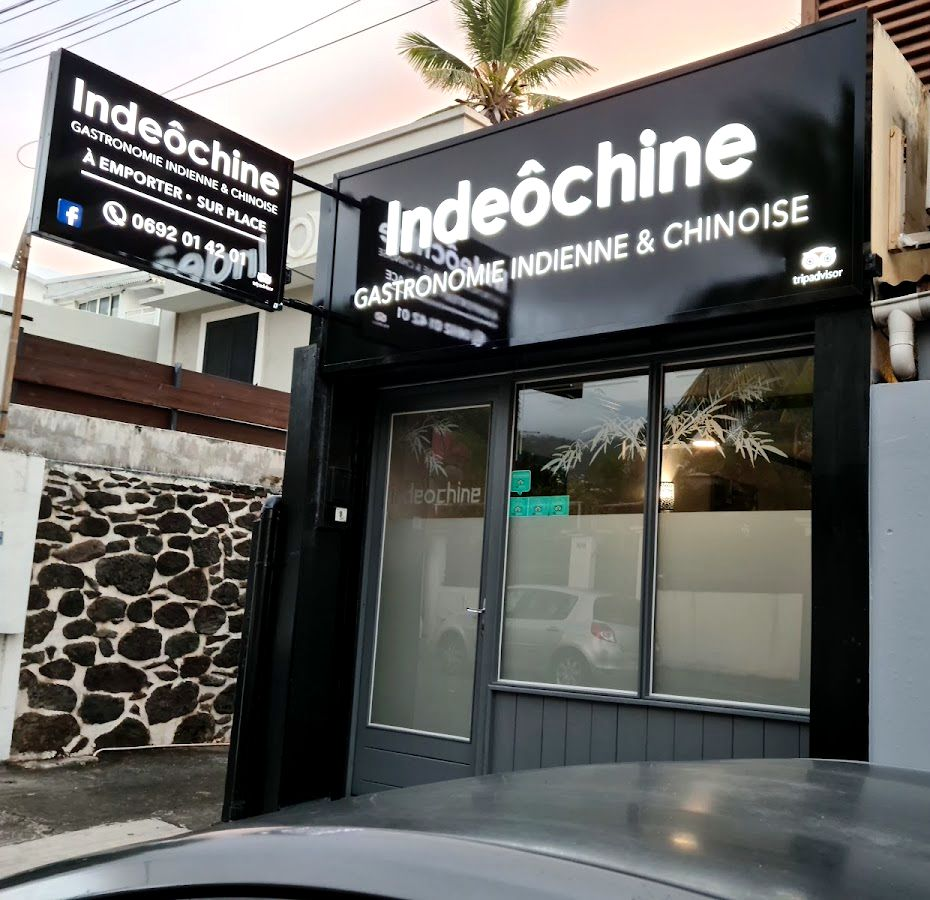

La maison
Une table de famille au cœur de Saint-Denis
Rue Sainte-Marie, l’enseigne annonce la couleur : « Gastronomie indienne & chinoise », à emporter ou sur place. Depuis 2010, on y vient pour les saveurs, les portions généreuses et l’accueil du patron, qui prend le temps d’expliquer chaque plat.
La carte change tous les jours, tout est préparé maison, et les clients parlent de leur « sauce maison vraiment incroyable ».
Halal · options végétariennes
